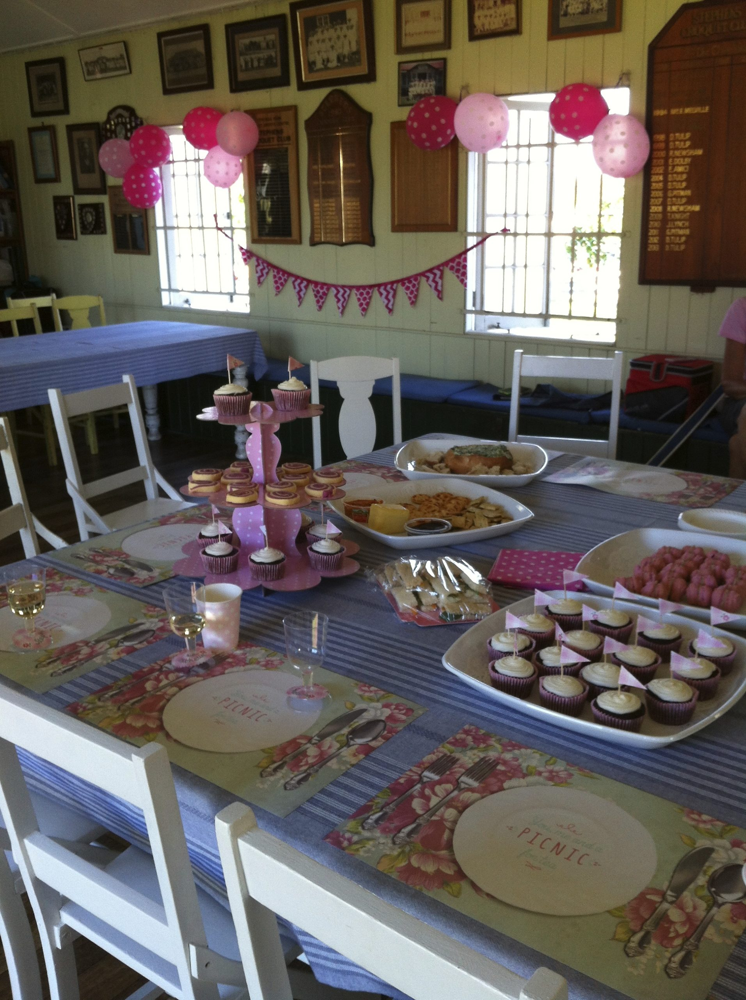
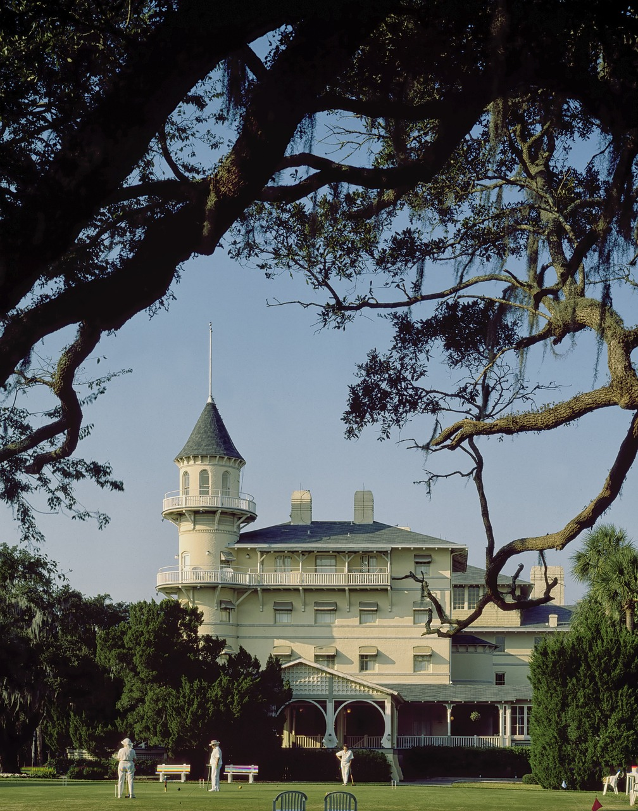

AC
AC
Wednesdays 9.45am, Saturdays 12.45pm. The original game, skill and tactics on a full-size lawn.
 GC
GC
Fridays and Sundays. Easy to learn in an afternoon, most new players start here.
 GB
GB
A fast, social, team-based code played on a smaller court, growing in popularity at Stephens.

&Afternoon tea, prize giving, and a clubhouse for hire for your own gathering.
Free come and try sessions, all gear supplied.

Join for casual green fees or a full season.

Four lawns, lights, and a clubhouse for hire.

On the Yeronga lawns since 1923.

Photos from our club and our members.

Put your logo in front of our community.
No experience, no equipment and no pressure needed. Come along, meet the members, and have a go, on us.
Get startedStephens Croquet Club
Stephens
Your logo here: sponsor an event at Stephens Croquet Club.
Become a sponsorReady to play · Ready to play · Ready to play
In 1923, the first sod for croquet courts in Yeronga Park was turned with a horse and plough. The inaugural members were notable ladies of the Stephens Shire, only playing Association Croquet sidestyle in white dresses, and they were taught the game by members of East Brisbane Croquet Club.